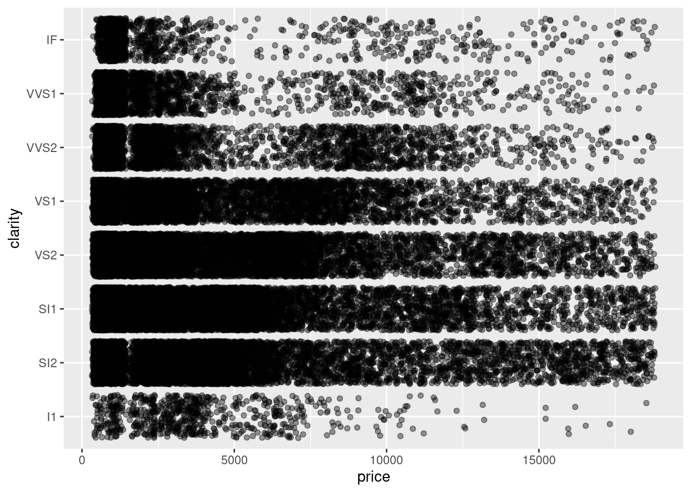
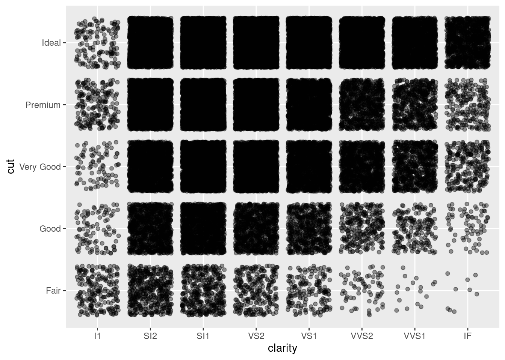

ggplot
Hendrilalaina
2025-03-29
1 Packages
library(ggplot2)
suppressPackageStartupMessages(library(dplyr))2 Data Preparation
data("diamonds")
diamonds %>% glimpse()## Rows: 53,940
## Columns: 10
## $ carat <dbl> 0.23, 0.21, 0.23, 0.29, 0.31, 0.24, 0.24, 0.26, 0.22, 0.23, 0.…
## $ cut <ord> Ideal, Premium, Good, Premium, Good, Very Good, Very Good, Ver…
## $ color <ord> E, E, E, I, J, J, I, H, E, H, J, J, F, J, E, E, I, J, J, J, I,…
## $ clarity <ord> SI2, SI1, VS1, VS2, SI2, VVS2, VVS1, SI1, VS2, VS1, SI1, VS1, …
## $ depth <dbl> 61.5, 59.8, 56.9, 62.4, 63.3, 62.8, 62.3, 61.9, 65.1, 59.4, 64…
## $ table <dbl> 55, 61, 65, 58, 58, 57, 57, 55, 61, 61, 55, 56, 61, 54, 62, 58…
## $ price <int> 326, 326, 327, 334, 335, 336, 336, 337, 337, 338, 339, 340, 34…
## $ x <dbl> 3.95, 3.89, 4.05, 4.20, 4.34, 3.94, 3.95, 4.07, 3.87, 4.00, 4.…
## $ y <dbl> 3.98, 3.84, 4.07, 4.23, 4.35, 3.96, 3.98, 4.11, 3.78, 4.05, 4.…
## $ z <dbl> 2.43, 2.31, 2.31, 2.63, 2.75, 2.48, 2.47, 2.53, 2.49, 2.39, 2.…3 One Variable
3.1 Discrete
diamonds %>%
ggplot(aes(cut)) +
geom_bar() ## Continious
## Continious
diamonds %>%
ggplot(aes(x = price)) +
geom_density()diamonds %>%
ggplot(aes(x = price)) +
geom_area(stat = "bin")## `stat_bin()` using `bins = 30`. Pick better value with `binwidth`.diamonds %>%
sample_n(100) %>%
ggplot(aes(x = table)) +
geom_dotplot()## Bin width defaults to 1/30 of the range of the data. Pick better value with
## `binwidth`.diamonds %>%
ggplot(aes(x = price)) +
geom_histogram()## `stat_bin()` using `bins = 30`. Pick better value with `binwidth`.# Two Variables
3.2 Continious X, Continious Y
diamonds %>%
ggplot(aes(x = x, y = y)) +
geom_point()
3.3 Continious X, Discrete Y
diamonds %>%
ggplot(aes(x = price, y = clarity)) +
geom_jitter(alpha = 0.4)
3.4 Discrete X, Continious Y
diamonds %>%
ggplot(aes(x = clarity, y = price)) +
geom_violin()diamonds %>%
ggplot(aes(x = clarity, y = price)) +
geom_boxplot()3.5 Discrete X, Discrete Y
diamonds %>%
ggplot(aes(x = clarity, y = cut)) +
geom_jitter(alpha = 0.4)
4 Further Dimensions
4.1 Color
diamonds %>%
ggplot(aes(x = x, y = y, col = price)) +
geom_point() +
scale_color_continuous(low = "green", high = "red")## Facets
diamonds %>%
ggplot(aes(x = x, y = y, col = price)) +
geom_point() +
facet_grid(cut ~ color ) +
scale_color_continuous(low = "green", high = "red")4.2 Size
diamonds %>%
ggplot(data = ., aes(x = x, y = y, col = price, size = table)) +
geom_point(alpha = 0.15) +
facet_grid(cut ~ color) +
scale_color_continuous(low = "green", high = "red")